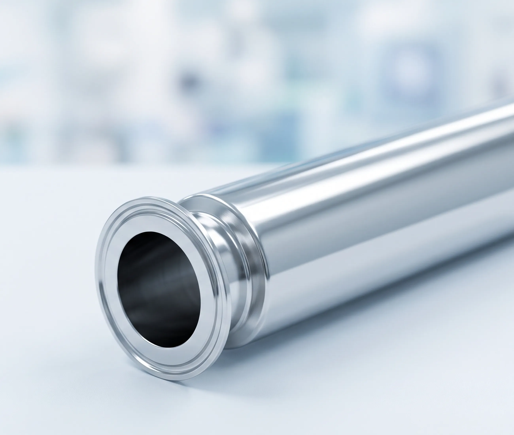
食品・医薬品設備に、
洗浄しやすさまで考えたサニタリー加工を。
フェルール溶接、サニタリー配管、タンク・ホッパー改造、ノズル追加から装置製作まで。
豊栄製作所は、真空装置製作で培った溶接技術と内製化体制で、設計段階から対応します。
解決できること
Solutions
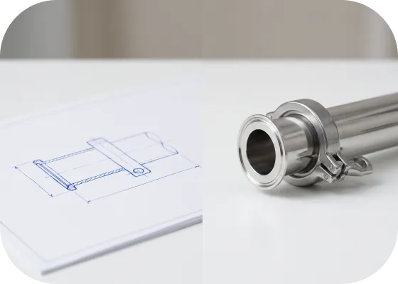
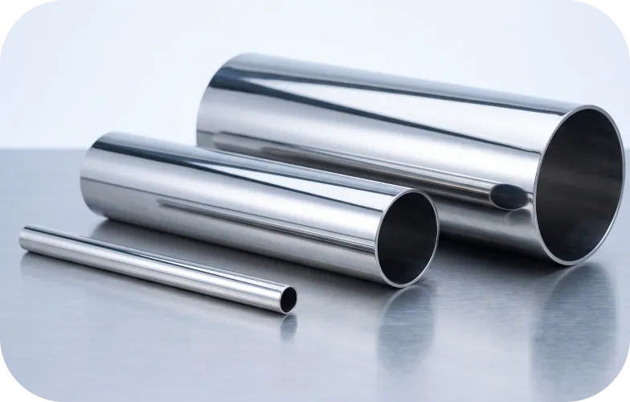
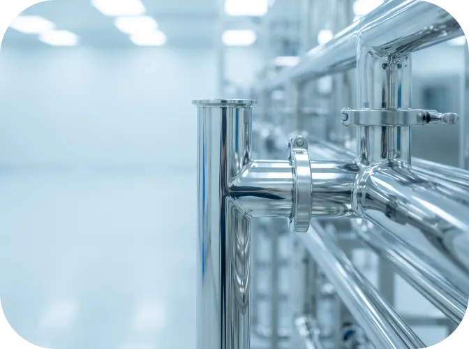
こんなお悩み、
豊栄製作所なら解決できます！
食品・医薬品設備のサニタリー加工は、「図面通りに作る」だけでは十分ではありません。
洗浄しやすい形状、溶接部の仕上がり、液溜まりへの配慮など、使用環境まで考えた製作が求められます。
豊栄製作所では、図面が固まる前のご相談から、試作・小ロット、溶接、研磨、仕上げまで一貫して対応。
「どこに頼めばいいか分からない」といった段階からご相談いただけます。
強み
Strengths
洗浄性と清潔感に配慮したサニタリー仕上げ。
サニタリー用途のステンレス部品では、溶接後の焼け・段差・隙間・バリが、洗浄不良や腐食、異物混入の原因になることがあります。
豊栄製作所では、TIG溶接・レーザ溶接に加え、焼け取り、ビード仕上げ、バフ仕上げ、酸洗いなど、用途に応じた仕上げに対応しています。
食品・医薬・化粧品・研究設備向けの部品に求められる「清潔感のある外観」と「洗浄しやすい形状」を意識し、フェルール溶接、サニタリー配管、タンク・ホッパー改造、ノズル追加などを一つ一つ丁寧に加工します。
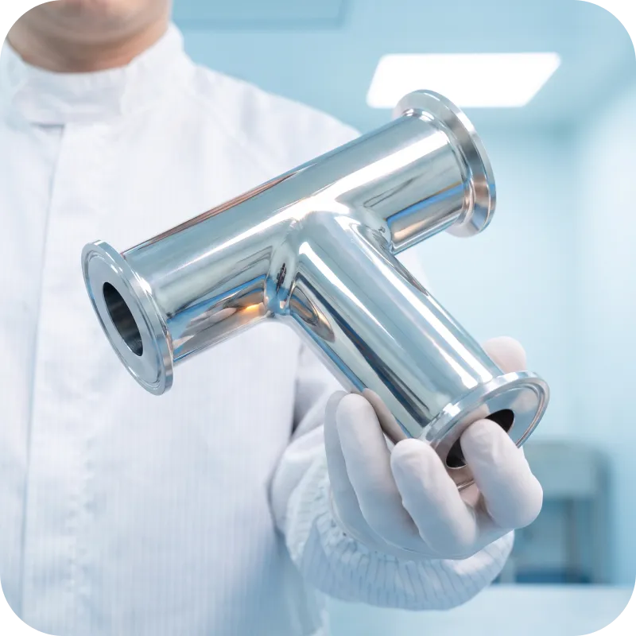
技術
Technique
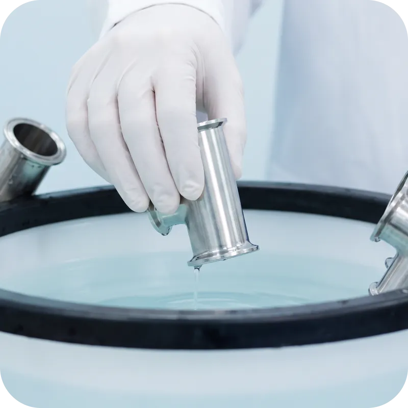
洗浄性と耐食性は、
溶接部の仕上がりで変わります。
食品・医薬品設備に使用されるサニタリー製品は、
「製品内部を清潔に保ち、繰り返し洗浄できる形状」が求められます。
しかし、溶接部に段差や隙間、凹凸が残ると、原料や洗浄液が滞留しやすくなります。
また、溶接時に発生する焼けを適切に除去しない場合、外観だけでなく、ステンレス本来の耐食性に影響することがあります。
そのため、サニタリー溶接では、単に強度を確保するだけでなく、次の点を総合的に管理しなければなりません。
- 01段差や隙間を抑えた接合
- 02洗浄しやすい滑らかなビード形状
- 03溶け込み不足や過度な溶接変形の防止
- 04溶接焼けや酸化皮膜の適切な除去
- 05バリや研磨傷を残さない仕上げ
- 06使用環境に応じた材質、溶接方法、仕上げ方法の選定
豊栄製作所では、製品の用途や形状、板厚、使用環境を確認したうえで、TIG溶接やレーザ溶接、焼け取り、ビード仕上げ、バフ仕上げ、酸洗いなどを使い分けています。
「きれいに見えるか」だけでなく、洗浄性～耐食性～気密性まで考えた加工を行うことが、サニタリー製品の品質に直結します。
加工事例
Works
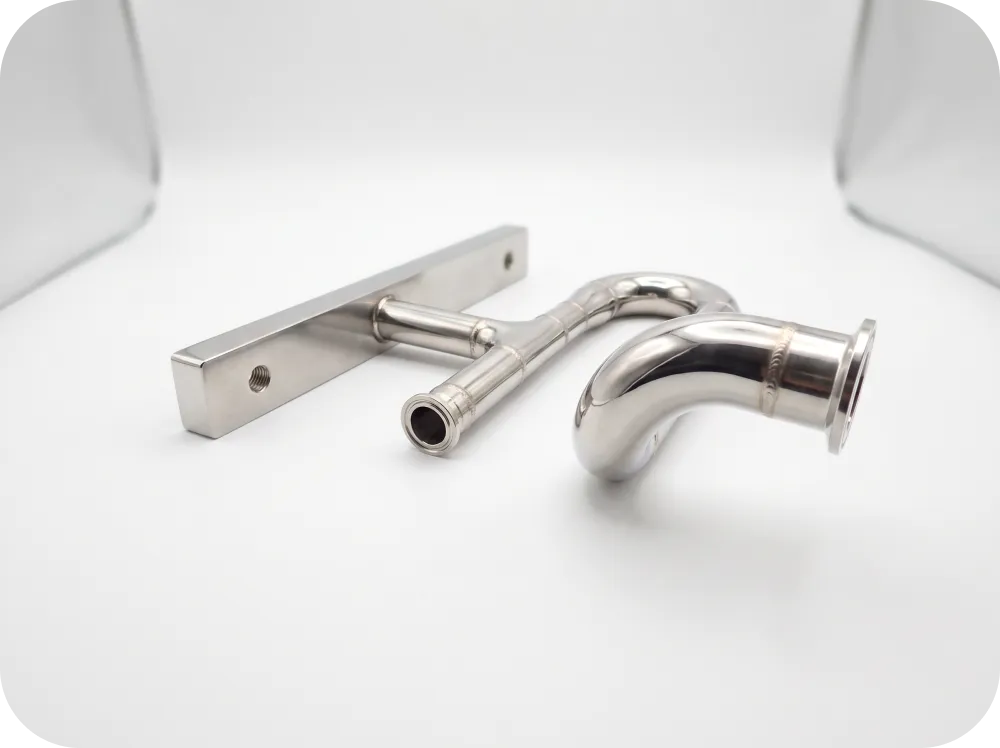
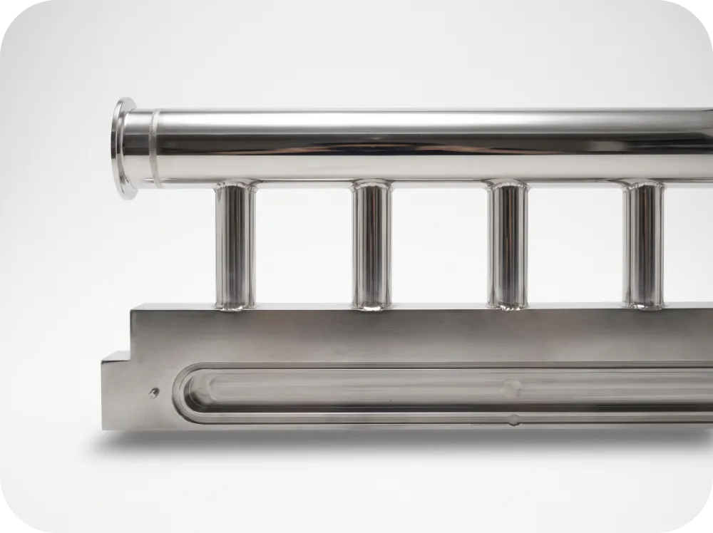
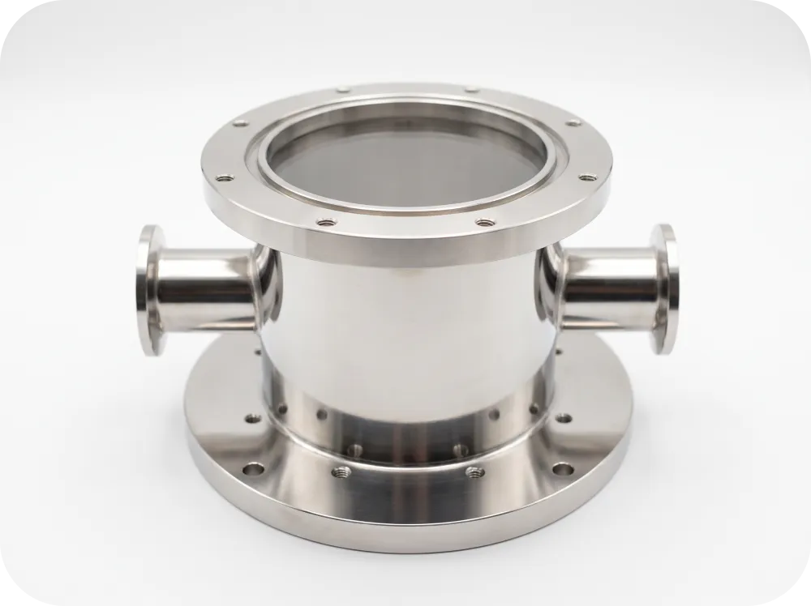
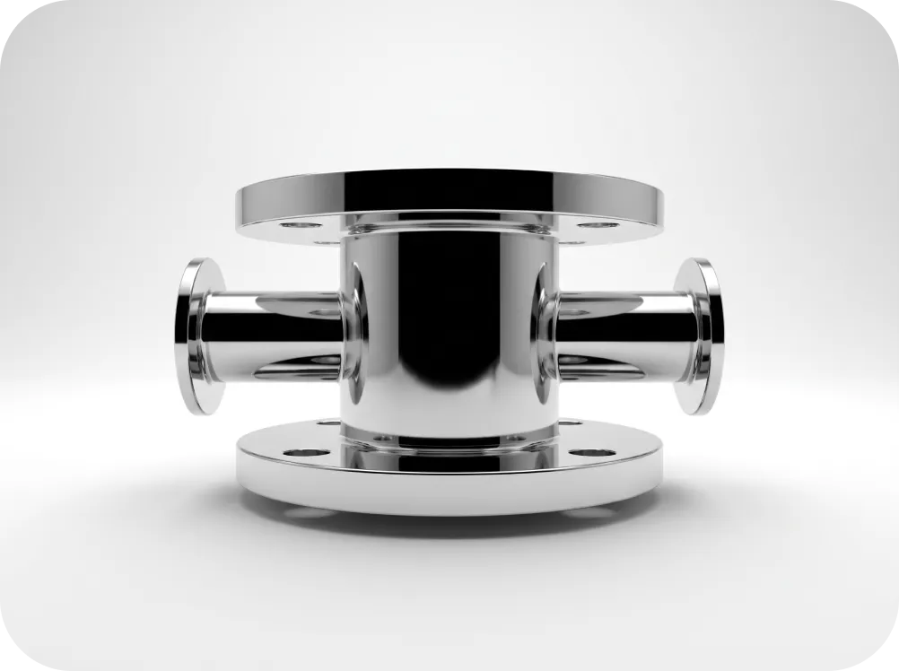
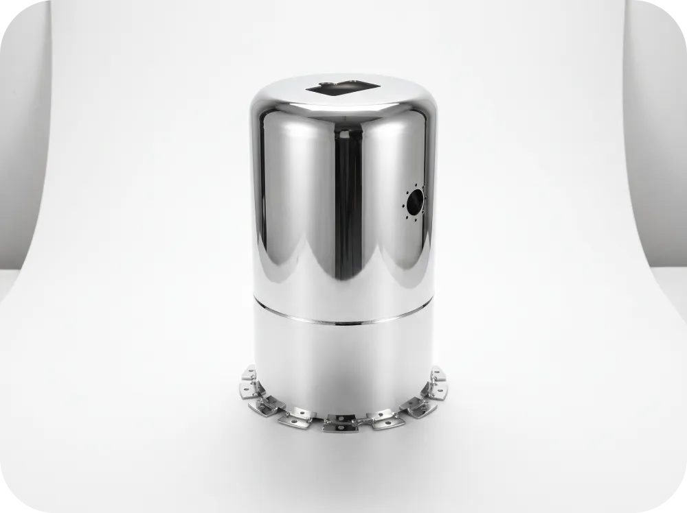
加工範囲
Capabilities
試作・小ロットから、さまざまな形状・サイズに対応。
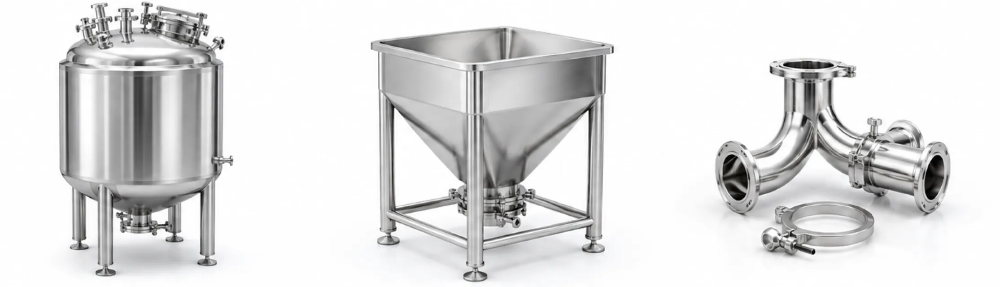
- 対応品目
- 配管／タンク・ホッパー／板金部品
- 対応サイズ
- 小型部品からタンク・製缶品まで※形状・板厚・サイズにより個別確認
- 対応材質
- SUS304／SUS304L／SUS310／SUS316／SUS316L※その他材質は要相談
品質
Quality
01. 出荷前の検品を徹底
寸法・外観・溶接部・研磨状態など、製品ごとに必要な項目を確認してから出荷します。
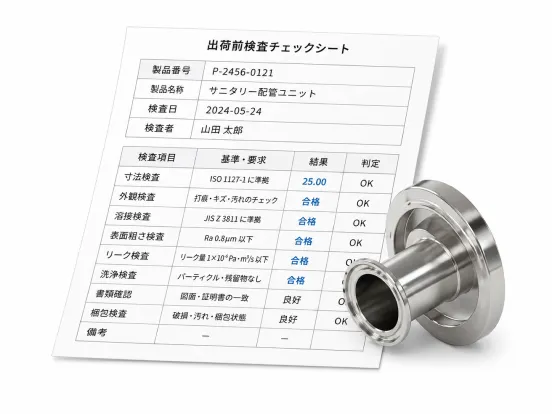
02. 製作履歴を管理
材料や製作内容などの情報を管理し、必要に応じて製品を遡って確認できる体制を敷いています。
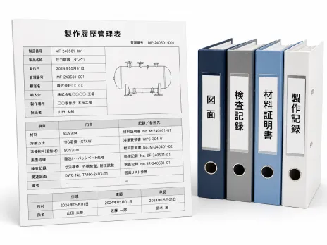
03. 工程ごとに品質を確認
完成後だけではなく、溶接・仕上げなど各工程で状態を確認。
後工程での手直しや品質のバラつきを防ぎます。
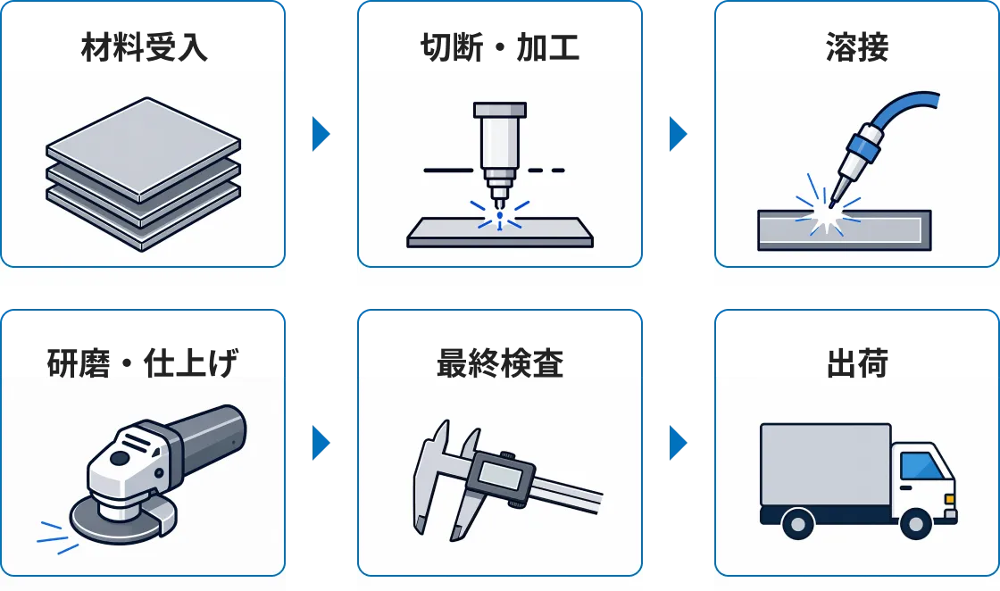
04. 納期も品質の一つ
受注時に製作工程を確認し、無理のないスケジュールを設定。
品質を維持したうえで、約束した納期での納品を目指します。
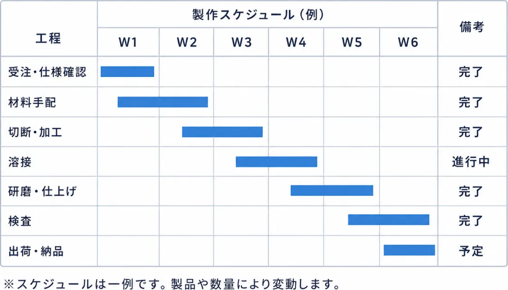
会社概要
Company
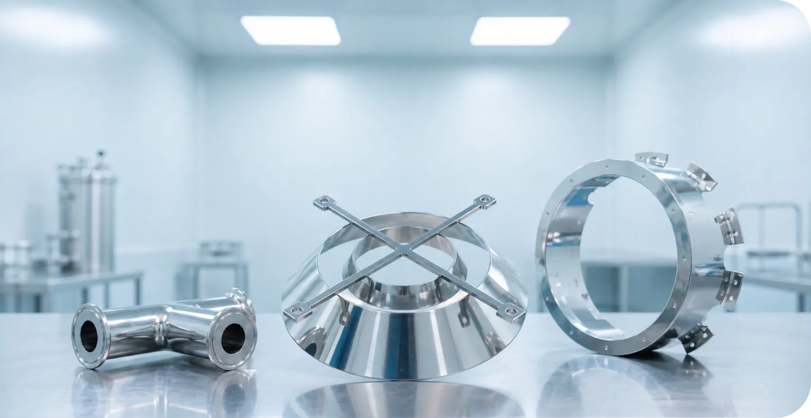
- 会社名
- 株式会社 豊栄製作所
- 代表取締役
- 北坂 規朗
- 設立
- 1976年8月
- 資本金
- 1,000万円
- 所在地
- 〒561-0845大阪府豊中市利倉1-13-15
- 電話番号
- 06-6866-0140
- メールアドレス
- soudan@houeiz.com
お気軽にご相談ください。
「この加工は対応できる？」「現物しかないけど相談したい」「短納期でも対応できる？」
そんな段階からでも、お気軽にご相談ください。
お客様の用途やご要望に合わせて最適な加工方法をご提案いたします。